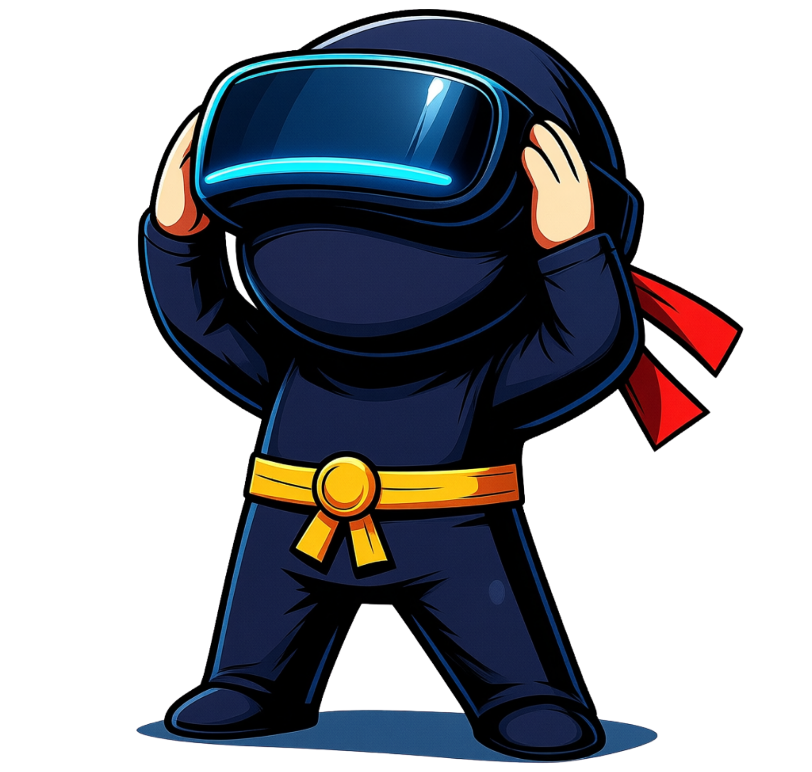
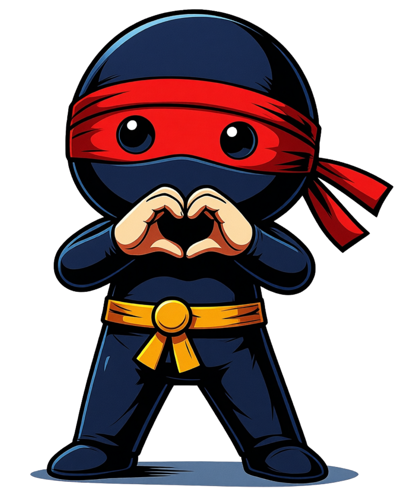
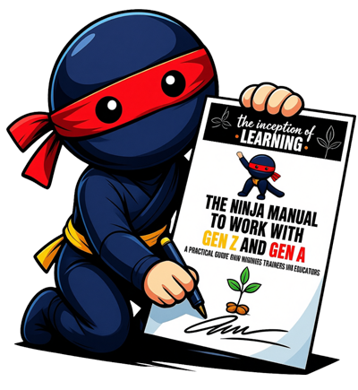
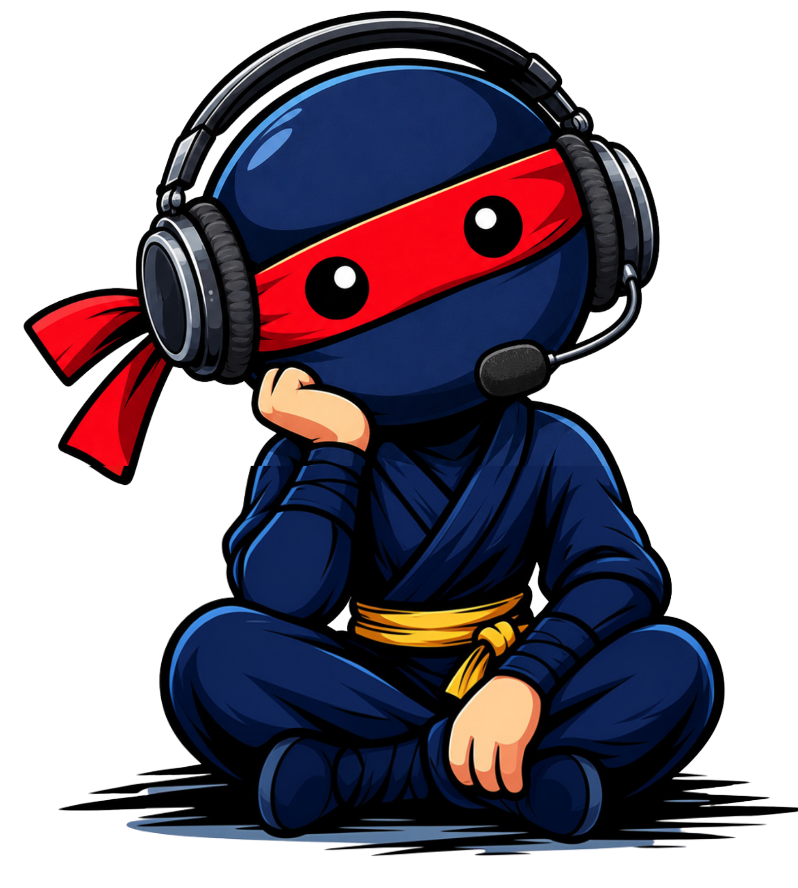
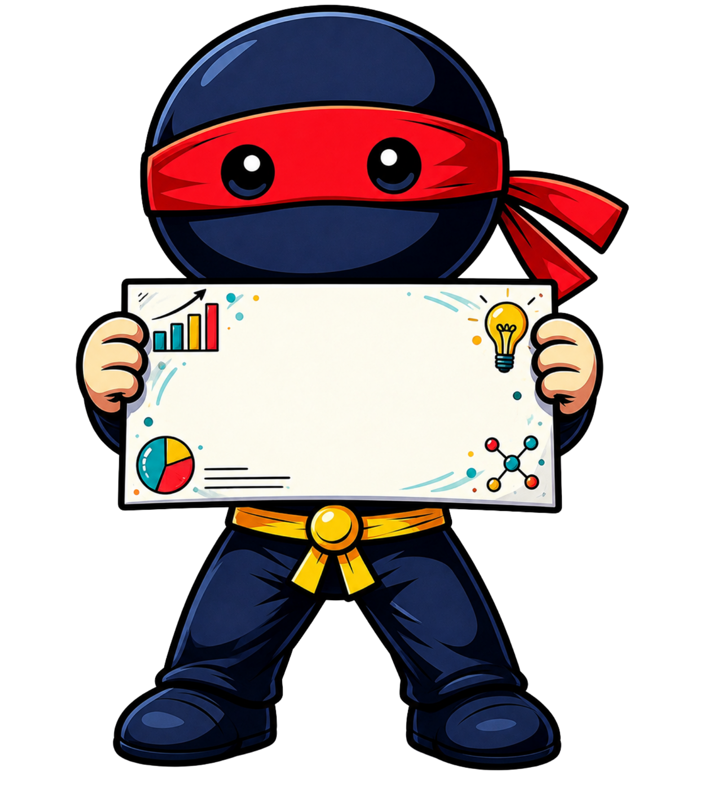
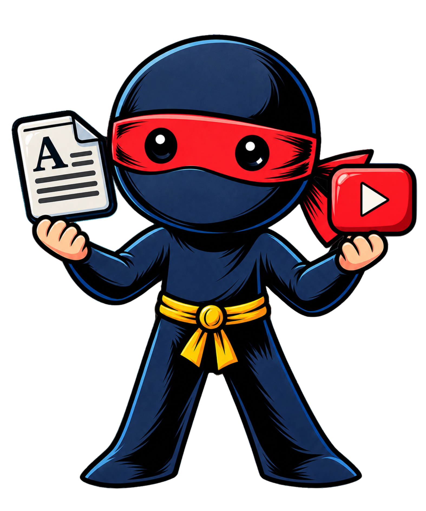

Understanding the
New Generations
Each new generation learns in ways we never planned for, the current new Generations Z and Alpha are no different. The resources on this web page are here to help you catch up, and maybe get ahead. They were designed with youth workers, trainers, educators and teachers from different countries, cultures and backgrounds in mind. They are based on research we did in 2025, were developed with a broad range of people, tested and finally published.


Manual
Here you can find the Ninja Manual to work with Gen Z and Gen Alpha - a practical guide for youth workers, trainers, educators and teachers (yes, also teachers!). In the Manual you can read more about the learning preferences of the two generations, the ideas we put together for working with them, and the ready to use activities the project created. There are also tips and recommendations for staying in tune. The Manual was created as a result of a piece of research we conducted over several months, the outcomes of a Lab and a training course we conducted with youth workers, activists, trainers and educators. The activities in the Manual were created in the Lab and tested in the training course.

Podcasts
In this section you can find 10 inspirational podcast interviews with professionals from all over the world. We engaged with experts such as Barbara Oakley (USA), David Yeager (USA) and Ashley Fell (Australia) who spoke about motivation, learning trends, myths and realities, leadership, and the participation of Gen Z and Gen Alpha in their learning.

Infographics
We produced ten infographics that summarise the findings from the research we conducted within the frame of our project. They explore the learning needs and preferences of Gen Alpha and Gen Z, how learning is working in youth work and within the formal education system. They also provide tips and direction for staying in tune as a youth worker or educator.

Articles and Videos
Check out the most common myths, misconceptions and misbeliefs linked to the brain and learning. In this section you can find articles about concepts such as Dale’s Learning Cone, the attention span of a Goldfish, only using 10% of the brain, and many more… Here you can read what the current knowledge and understanding says about these “theories”.
If you don’t have time to read the full articles, we made a series of videos so you can get to know the essence of each article in just over a minute each!

Overview of the project
Why the “Inception of Learning" project?
A friendly conversation between two educators around a simple question sparked the idea for this project. That question was “why do we do things the way we do them and is it still working?”. The context of the question was in relation to running training courses and seeing that the groups we work with are different than they were several years before. It is clear that the COVID-19 pandemic has had an influence, but it was also clear that the needs and preferences of the groups we are working with had changed (Gen Z and even some Gen Alpha).
We decided to take a closer look at the learning needs and preferences of these two Generations - who are mostly the current beneficiaries of non-formal education events and formal education - and see if the traditional classic methods and created learning spaces corresponded with their preferences. If the needs turned out to be different, how then should we update and refresh them so that they can serve these new generations in the best way possible.
The project and its results have been created for everyone who, when working with a group, senses that something is off or different than it used to be. It is for anyone who is curious and open to learning and wants to stay updated or ahead in this fast paced ever changing world of education and learning.
When? Where? How? - the timeline of the project!
Research
Focus groups, desk research, questionnaire
Laboratory
Brainstorming, testing, generating ideas and exchanging experiences with peers involved in non-formal and formal learning experiences.
Creating activities for overcoming blocks and opening new channels of learning with Gen Z and Gem Alpha.
Podcasts
Production of eight podcasts on learning with Gen Z and Gen Alpha.
Training Course
Youth workers, activists, trainers, educator and teachers tested, reviewed, checked and discussed the methods and activities, and the content for the Manual.
Manual, Infographics, Articles and Videos
Producing the content for each and creating the products ready for dissemination.
Multipliers Events
Each partner sharing and promoting the results and products of the project.
Little bio about each partner
Fundacja Instytut Innowacji - coordinator
Fundacja Instytut Innowacji is a Polish non-governmental organisation based in Warsaw established in 2006. We support the development of young people, youth workers, trainers and educators through non-formal education and international cooperation. We organise educational projects, training courses and youth exchanges, mainly within the Erasmus+ and European Solidarity Corps programmes. Our activities focus on developing essential skills for the future, particularly creativity, empathic communication, collaboration, critical thinking and facilitation of learning.
We believe in learning through experience, building meaningful relationships and creating spaces where everyone can grow and develop.
Jasna Idnina
Jasna Idnina Association is a civil society organisation based in Nebregovo, North Macedonia, with experience in European youth programmes and international cooperation. The association has participated in Erasmus+ initiatives focusing on youth exchanges, non-formal education, intercultural learning, and capacity building for youth workers. Its documented activities include international training courses and educational projects addressing youth mental health, European funding opportunities, and innovative learning approaches. Through these initiatives, Jasna Idnina has contributed to cross-border collaboration and knowledge exchange among young people and youth organizations.
Odd Socks
Odd Socks is a small consultancy company based in Montenegro. Odd Socks works primarily in the European youth sector developing training courses, publications, website content, and facilitating and reporting for youth work conferences. Odd Socks works with locally based youth organisation, national level organisations and European level organisations. At the European level this includes the European Union Erasmus+ Youth programmes, various Council of Europe departments, and the EU-Council of Europe Youth Partnership.
Team Mais
Team MAIS is a consultancy company based in Lisbon with solid international experience focused on innovative solutions for Youth Work and Adult Education. Team Mais develops training and educational materials mostly for educators, trainers, teachers and organisations. Established in 2007, the company works with organisations across Europe through the Erasmus+ programme and other frameworks. Previously, the team was part of an informal group of young youth workers who developed several international projects within the Youth in Action programme, gaining several years of experience managing international projects and developing content for international non-formal education contexts.
www.teammais.pt